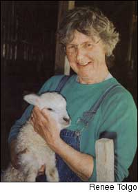
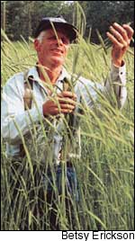
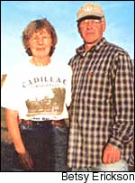
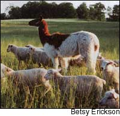
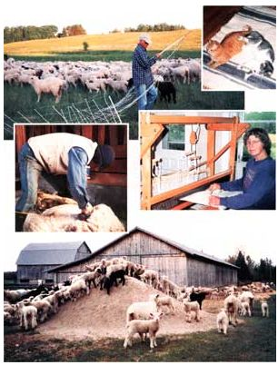

On our small sheep farm in Michigan, we explore traditional arts and crafts.
Neither my husband, Runo Lorentzon, nor I could properly be called part of the “back to the land” movement, or den gröna vågen, which is a Swedish phrase for the same trend and means “the green wave.” Both of us grew up on small farms: I am a native of the northern part of Michigan’s Lower Peninsula, and Runo spent his first 25 years in the beautiful, lake-studded province of Värmland, Sweden.
As young people, we met in Sweden, where I was visiting relatives, and Runo was a neighbor of my dad’s cousin. Runo and I corresponded a bit after I went home, and when I returned to Sweden the next June, we married, or in the words of the old Scandinavian saying, we “cast our futures into the same bag.”
We decided to establish our permanent home in the United States, and so Runo left his homeland, and we started a new life together on our Coe Creek Sheep Farm, in Tustin, Mich. This is the same farm my Scandinavian great-grandparents established as their homestead more than 100 years ago.
We have never been great planners, and our lifestyle has been more evolution than revolution, but we made several decisions in the beginning that have had far-reaching implications for us, and that were, perhaps, a way of asserting a slightly rebellious streak.
Early in our life together, we decided to not have children. On Runo’s part, this decision was influenced by the pessimistic side of his Nordic character. He does not feel that the world will be a very good place for the generations that follow us. I have a more optimistic outlook, but I have never wanted children of my own. We live in a neighborhood filled with extended family, which has given us many of the joys of parenthood without raising a family ourselves.
Another significant decision we made was to build our own house and to construct as much of it as we could from materials we harvested on the farm. Finally, we decided we would not use poisons to maintain our garden or farm. That has meant growing a large organic garden and raising our sheep on pasture instead of trying to grow grain crops.
Both of us grew up in traditional farmhouses, but we wanted to build a small house that would have more in common with a north woods cabin. We wanted a home that would be pleasant, cheerful, easy to maintain and conscientious in its use of resources.
The house we built has a main floor that is about 600 square feet, plus a full basement. Our walls are white pine board and batten on the outside - unpainted - with smooth, finished white cedar and pine on the inside. The main floor is one room plus a small bathroom. Our “bedroom” is just a small space separated from the living area by a large, double-sided bookcase. These shelves are a convenient way of storing our many books while also providing a partial screen for our sleeping area.
Our woodstove is in the basement, where the heat rises naturally to warm the main floor. A small room in the basement holds our canned goods, and another insulated, closed-off area makes a dandy root cellar. The lower level also provides space for our wringer washer and washtubs, a clothesline for wintertime laundry drying, and a few more modern touches, including a freezer and our recycling bins.
Mother Nature conspired with us to create an agricultural acreage that is a little different than the traditional farms in our area. We own and rent about 400 acres, which are home to many kinds of wildlife, and that forced us to make a choice. We could grow grain crops and prepare to fight off the deer, turkeys, geese, raccoons and other wild creatures that would compete with us for the harvest, or we could change our way of looking at the life of a farm. We chose the latter and decided to switch to grass-based agriculture.
We have a sheep flock of about 250 ewes, which swells to between 600 and 700 sheep during the summer when our lambs are also on pasture. By spending our resources on fencing instead of chemicals and plowing, we have improved our grazing land immensely and still produce most of our own livestock feed in a mixture of grass and hay. We have found that the sheep are healthier on a diet of diversified grasses, legumes and shrubs and that the environment benefits from this total retreat from monoculture.
We spend our springs and summers moving sheep from one paddock to another, allowing the plants recovery time before they are grazed again. We use a combination of electric fencing and personal vigilance to protect our livestock from the coyotes and bears, which we believe have an equal right to live on this land. For added protection against predators, we have a llama, Carlos, who stands watch over the sheep.
Growing our own food supply for year-round consumption has always been a goal, and each year we take a step or two toward accomplishing this. For years, we have grown all the food we need, and we are gradually increasing the production of foods that fill our wants.
Each spring, when we plant our garden, we put in seeds or plants for a few new crops. Recently, Joan Dye Gussow’s book, This Organic Life, gave us the impetus to try sweet potatoes for a second time. We had planted a few slips many years ago with no results, but Gussow’s reliance on this staple food crop in New York’s Hudson River area convinced us that we could find a variety that would prosper in our similarly cold climate. Last year, we planted ‘Georgia Jet,’ and we had a magnificent supply of long, orange-rose tubers.
Our cellar is full of homegrown and locally grown foods: We have our own tomatoes, pickles, shell beans and much more. Jars of maple syrup from our sugar bush and honey from several beehives provide most of the sweeteners we use year-round. We are also lucky enough to live in a fruit-producing state, so we have both wild and cultivated blueberries, and we buy apples, peaches and pears from other area farms. The root cellar is filled with potatoes, and onion and garlic bags hang from the basement ceiling. We have meat from poultry and livestock raised here on the farm, which includes chickens and a few beef cows and calves. We also keep a Jersey cow, which provides milk for our butter and cheese, two border collies to help us manage the flock, and two house cats to keep us company.
From Sheep To Rug
The choices we have made over the years have gradually, but steadily, led us to pursue learning the “old ways,” which usually means trying to master handwork. Technology has its place, but, if technology fails, as it sometimes does, it is comforting to know we can get along just fine with low-tech alternatives from our history.
In Sweden, in 1971, I learned to spin wool into yarn on an old spinning wheel. My teacher was Anna Alexandersson, my father’s first cousin. She was a kind taskmistress, but she settled for nothing less than perfection in the yarn I made. Her insistence upon quality work has been the standard against which I have measured all kinds of hand labor since that time.
It is easiest to see how far we have progressed in our adoption of the old handcrafts by looking at our wool rug production processes. We make and sell these rugs from home and at several shops. They are almost entirely made here on our farm: The only concession to factory work is in spinning the rug warp. I cannot produce the amount of warp I need on my spinning wheel and still have time to weave rugs, so we send some of our wool to a mill in New England and have it made into strong yarn.
When I tell children how a rug is made, I always say, “We begin by feeding the sheep and lambs,” for, of course, without a healthy flock there will be no good wool.
A few years ago, Runo had the opportunity to attend a one-day workshop on hand shearing taught by Kevin Ford, a master blade-shearer from Massachusetts. For years, Runo had shorn our flock with a motor-driven, fixed-shaft shearing machine, but in keeping with our interest in the old crafts, he attended this class out of curiosity. He was so impressed with Ford’s methods that he came home, sheared a couple of lambs we had in the barn and began reading Ford’s book, Shearing Day, night after night all winter long. When shearing time came around in March, Runo sheared our flock using only hand blades, and he continues to do the shearing this way.
We wash the wool, tear it apart with a hand-driven “picker,” and then we use an electric drum-carding machine to untangle the wool fibers. When I have a pile of fluffy, carded batts of wool, I go to the loom and begin to weave. I make rugs of unspun fleece on a loom Runo built.
This white oak counter-balanced loom is also a local product. A few years ago, we were walking across a neighbor’s woodlot on the way to some other family property, when we found a large, white oak that had gone down in a storm. When Runo told our neighbor Earl Williams about the tree, Earl said: “I don’t want that tree, but I will help you get it out if you want the lumber.” So that is what we did, and when we had some other logs for the traveling band-saw mill, we had the white oak made into planks, too. Now, that tree has found a second life as a lovely, hand-built rug loom.
Working with wool, I take raw materials and - without ever achieving perfection - strive to create something beautiful. Every time I sit down to weave, all of the circumstances surrounding this activity are in my mind. I think about the sheep out on the pasture, about the quiet “snick, snick” of the hand blades removing the fleece, of the smell of drying wool. I think about that tree in the woods, about the contemplation, the carpentry, the finishing that made the loom the reality. All of these elements are, I believe, embodied in every rug I weave.
After 25 years, we are still working to make our life as satisfying and sustainable as we can. Each time we take a step toward a more ecologically responsible life, we think we have won a small victory.
Betsy and Runo have additional photos and more information about their hand-crafted homestead and farm on their Web site, www.coecreekfarm.com.
|
 Betsy holds a lamb. |
 Runo in the rye field. |
 Betsy and Runo on the farm her great-grandparents once homesteaded. |
|
 Carlos the llama guards the sheep. |
 From shearing to weaving, most of the work that goes into the couple?s wool rugs is accomplished by hand. (The cats enjoy a completed rug, top right.) |
|